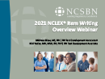

Webinars
Recorded Webinars Presented by NCSBN Staff and Members
-
NLC Legislative Update: February 2021
2021 | Recorded Webinar
-

What Nurse Employers Need to Know About the NLC
2021 | Recorded Webinar
-

Helpful NLC Tips for New Nursing Graduates
2021 | Recorded Webinar
-

REx-PN CAT Style Exam Webinar
The REx-PN CAT Style Exam Webinar:
- Explains how CAT (computerized adaptive testing) works in REx-PN
- Discusses why candidates receive variable-length CAT exam
- Describes how CAT exam assures content balancing
- Explains how pass/fail decision is made for the REx-PN
2020 | Recorded Webinar
-

REx-PN Item Development Webinar
The webinar will provide an overview of the Item development process. It explains the processes of item writing and item review used to ensure the validity, reliability and legal defensibility of the REx-PN exam. The session will also discuss and provide a direct link to valuable REx-PN resources, along with a connection to the next segment in the series.
2020 | Recorded Webinar
-

REx-PN Test Plan Webinar
To ensure public protection, each province requires graduates for practical nursing to meet set requirements that include passing an examination that measures the competencies needed to perform safely and effectively as a new entry-level Practical Nurse (LPN/RPN). Every five years in collaboration with British Columbia College of Nurses and Midwives (BCCNM) and College of Nursing of Ontario (CNO), NCSBN conducts a practice analysis to analyze entry-level LPN/RPNs Canadian practice. Using the data collected from the practice analysis, the REx-PN Test Plan is developed, which guides the selection of content and behaviors to be tested during REx-PN administration. This webinar will provide an overview of the 2019 REx-PN Practice Analysis and the 2022 REx-PN Test Plan.
2020 | Recorded Webinar
-

COVID 19 & the NCLEX: Testing Availability Webinar
During the COVID-19 pandemic, NCLEX candidates have had to wait longer or travel farther to take their exams. NCSBN has worked to reopen NCLEX test centers and expand time slots while following Centers for Disease Control and Prevention (CDC) guidelines and recommendations. This webinar for educators reviews NCSBN's efforts to restore testing capacity during the COVID-19 pandemic, temporary testing sites and what candidates need to know.
2020 | Recorded Webinar
-

COVID-19 & the NCLEX: Educator Webinar
NCSBN and Pearson VUE worked together to allow for the continued testing of NCLEX-RN and NCLEX-PN candidates on a limited basis, subject to state and local requirements. NCSBN hosted a 30-minute webinar to answer questions educators have about the modified exam and testing procedures in place.
2020 | Recorded Webinar
-

NCLEX Examinations Webinar Series: 2020 NCLEX-PN Test Plan Overview
This webinar will be presented by the Test Development team and discuss the new NCLEX-PN Test Plan that will become effective in April 2020 as detailed below:
To ensure public protection, each jurisdiction requires candidates for practical nurse licensure to meet set requirements that include passing an examination that measures the competencies needed to perform safely and effectively as an entry-level, newly licensed practical/vocational nurse (LPN/VN). NCSBN develops a licensure examination for LPN/VNs, the NCLEX-PN, which is used by jurisdictions to assist in making licensure decisions. Triennially, NCSBN conducts the NCLEX-PN Practice Analysis to analyze entry-level LPN/VN practice. Using the data collected from the practice analysis, NCSBN develops the NCLEX Test Plan which guides the selection of content and behaviors to be tested during NCLEX administration. In April 2020, the new 2020 NCLEX-PN Test Plan will become effective. This webinar will provide an overview of the 2020 NCLEX-PN Test Plan, including new information effective with the test plan revision.
2020 | Recorded Webinar
-

NCLEX Examinations Webinar Series: 2019 NCLEX-RN Test Plan Overview
To ensure public protection, each jurisdiction requires candidates for registered nurse licensure to meet set requirements that include passing an examination that measures the competencies needed to perform safely and effectively as a newly licensed, entry-level registered nurse. Triennially, NCSBN conducts a practice analysis to analyze entry-level RN practice. Using the data collected from the practice analysis, the NCLEX Test Plan is developed, which guides the selection of content and behaviors to be tested during NCLEX administration. This webinar will provide an overview of the 2019 NCLEX-RN Test Plan, including new information effective with the test plan revision.
2019 | Recorded Webinar
-

NCLEX Examinations Webinar Series: Next Generation NCLEX (NGN) Project
An overview of the Next Generation NCLEX project (NGN). Topics covered include:
- The Clinical Judgment Model;
- Item Prototype Development; and
- Frequently Asked Questions related to the project.
2018 | Recorded Webinar
-

NCLEX Examinations Webinar Series: 2017 NCLEX-PN Test Plan Overview
To ensure public protection, each jurisdiction requires candidates for practical nurse licensure to meet set requirements that include passing an examination that measures the competencies needed to perform safely and effectively as a newly licensed, entry-level practical nurse. NCSBN develops a licensure examination, the NCLEX-PN, which is used by jurisdictions to assist in making licensure decisions. Triennially, NCSBN conducts the NCLEX-PN Practice Analysis to analyze entry-level PN practice. Using the data collected from the practice analysis, NCSBN develops the NCLEX Test Plan which guides the selection of content and behaviors to be tested during NCLEX administration. In April 2017, the new 2017 NCLEX-PN Test Plan will become effective. This webinar will provide an overview of the 2017 NCLEX-PN Test Plan, including new information effective with the test plan revision.
2017 | Recorded Webinar
-

NCLEX Examinations Webinar Series: 2016 NCLEX Test Plan Overview
To ensure public protection, each jurisdiction requires candidates for registered nurse licensure to meet set requirements that include passing an examination that measures the competencies needed to perform safely and effectively as a newly licensed, entry-level registered nurse. NCSBN develops a licensure examination, the NCLEX-RN, which is used by jurisdictions to assist in making licensure decisions. Triennially, NCSBN conducts the NCLEX-RN Practice Analysis to analyze entry-level RN practice. Using the data collected from the practice analysis, NCSBN develops the NCLEX Test Plan which guides the selection of content and behaviors to be tested during NCLEX administration. In April 2016, the new 2016 NCLEX-RN Test Plan will become effective. This webinar will provide an overview of the 2016 NCLEX-RN Test Plan, including new information effective with the test plan revision.
2015 | Recorded Webinar
-

Compact State Nurse Licensure: An Overview
Brief overview of the Nurse Licensure Compact
2014 | Recorded Webinar
-

NCLEX Examinations Webinar Series: NCLEX Item Writing and Item Review
The Item Writing and Item review Webinar will provide an overview of the Item development process. It explains the processes of item writing and item review used to ensure the validity, reliability and legal defensibility of the NCLEX exam. The session will also discuss and provide a direct link to valuable NCLEX resources, along with a connection to the next segment in the series.
This webinar is part of the 2013 NCLEX Examinations Webinar Series. This series includes the following webinars:
- NCLEX Test Plan
- Scope of Practice, Practice Analysis and Knowledge, Skills and Abilities
- NCLEX Item Writing and Item Review
- NCLEX Sensitivity and Differential Item Functioning Review
2013 | Recorded Webinar
-

NCLEX Item Selection
- Every time you answer an item, the computer re-estimates your ability based on all the previous answers and the difficulty of those items.
- The computer then selects the next item that you should have a 50% chance of answering correctly.
- This way, the next item should not be too easy or too hard
- The computer's goal is to get as much information as possible about your true ability level
- You should find each item challenging as each item is targeted to your ability
- With each item answered, the computer's estimate of your ability becomes more precise.
2013 | Recorded Webinar
-

NCLEX Exam - 95% Confidence Interval Rule
This rule is the most common for NCLEX candidates. The computer will stop giving items when it is 95% certain that your ability is clearly above or clearly below the passing standard.
2013 | Recorded Webinar
-

Maximum-Length Exam Rule
When your ability is very close to the passing standard, the computer continues to give you items until the maximum number of items is reached. At this point, the computer disregards the 95% confidence rule and decides whether you pass or fail by your final ability estimate.
- If your final ability estimate is above the passing standard, you pass.
- If your final ability is at or below the passing standard, you fail.
2013 | Recorded Webinar
-

NCLEX Examinations Webinar Series: NCLEX Sensitivity and Differential Item Functioning Review
The Dif and sensitivity Webinar will cover the Differential Item functioning (DIF) and Sensitivity Item Review processes. The webinar will describe the purpose of the processes and the procedures involved with reviewing items for DIF and Sensitivity issues. The session will also discuss and provide a direct link to valuable NCLEX resources, along with a connection to the next segment in the series.
This webinar is part of the 2013 NCLEX Examinations Webinar Series. This series includes the following webinars:
- NCLEX Test Plan
- Scope of Practice, Practice Analysis and Knowledge, Skills and Abilities
- NCLEX Item Writing and Item Review
- NCLEX Sensitivity and Differential Item Functioning Review
2013 | Recorded Webinar
-

NCLEX Webinar Series: Scope of Practice, Practice Analysis and Knowledge, Skills and Abilities
The Scope of Practice, NCLEX Practice Analysis and Knowledge, Skills and Abilities webinar will cover the beginning principles in the development of the NCLEX examination which is used by nursing regulatory bodies to make primary nursing licensure decisions. The session will also discuss and provide a direct link to valuable NCLEX resources, along with a connection to the next segment in the series.
This webinar is part of the 2013 NCLEX Examinations Webinar Series.
This series includes the following webinars:
- NCLEX Test Plan
- Scope of Practice, Practice Analysis and Knowledge, Skills and Abilities
- NCLEX Item Writing and Item Review
- NCLEX Sensitivity and Differential Item Functioning Review
2013 | Recorded Webinar
-

Compact State Licensure: An Overview
This webinar will provide an overview of the Nurse Licensure Compact and will focus on licensing.
2013 | Recorded Webinar
-

A Review of the Components and Best Practices in Using Electronic Health Records
The use of Electronic Health Records (EHRs) has grown over the past few years and is now seen as an essential part of primary and acute patient care and case management. Boards of Nursing retain responsibility for public safety and need to be aware of current practices, policies and patient safety enhancements with the use of EHRs.
This engaging program will provide nursing regulatory bodies with:
- A general understanding of information contained within the EHR,
- A discussion of the policy implications and patient safety enhancements with the implementation of an EHR and
- A live demonstration navigating the EHR
Presenter: Thomas Andrews, RN-BC,MS Director, Acute Care Informatics Presence Health
For the best viewing experience, view video in full screen.
2012 | Recorded Webinar
-

NCLEX-RN Webinar for Canadian Nursing Educators
This NCLEX-RN Webinar for Canadian Nursing Educators provides an overview of the role of regulatory examinations, why the NCLEX was selected for Canadian RN entry to practice, an introduction to the elements of computerized adaptive testing and NCLEX development, as well as information on how students and educators can prepare for the NCLEX in 2015.
The objectives of this webinar are:
- Introduce regulatory background of licensure examinations
- Provide an overview of the NCLEX development process
- Identify linkage between entry-level nursing practice analysis and NCLEX test plan
- Illustrate concepts of computerized adaptive testing as they relate to the NCLEX
- Highlight NCLEX information available on the NCSBN Website
- Identify NCLEX development opportunities for Canadian nursing experts
2012 | Recorded Webinar
-

The Future of Nursing Education Program Approval Webinar
Why all the buzz about NCSBN’s World Café meeting?
In December of 2011, the NCSBN Nursing Education Committee hosted a World Café meeting as part of their work to make recommendations for the future of nursing program approval. This innovative meeting brought together regulators, educators and accreditors to shape the future of nursing education. The Webinar features the results of the World Café discussions and illustrates what contributed to its success. Next steps for nursing regulatory bodies (NRBs) in moving forward with nursing program approval initiatives are discussed, highlighting our new online toolkit that provides NRBs with resources and support for requiring national nursing accreditation.
This engaging program will provide NRBs with an overview of:
- the concepts and themes from the World Cafe™ Education Meeting;
- tips on hosting a successful World Cafe™; and
- NCSBN tools to support NRBs with nursing education approval
Presenter: Nancy Spector, PhD, RN Director, Regulatory Innovations
2012 | Recorded Webinar
Members Only: Recorded Webinars Presented by NCSBN Staff and Members
-

NCLEX Examinations Webinar Series: 2021 NCLEX Item Writing Overview
This webinar is presented by the Test Development team. The team provides attendees with a brief overview of the development of NCLEX test development process and then focus on item writing. Exam development experts walk you through a detailed session where you will learn about how items are developed for NCSBN exams.
Webinar topics include:
- Overview of the NCLEX test development process
- NCLEX item formats
- Principles of item writing
- Available NCLEX resources
2021 | Recorded Webinar
-

NLC Board Training: Resources
2021 | Recorded Webinar
-
NLC Board Training: Nursys
2021 | Recorded Webinar
-
NLC Board Training: Discipline: Part 1
2021 | Recorded Webinar
-
NLC Board Training: Discipline: Part 2
2021 | Recorded Webinar
-
Multistate Licensure: Part 2
2021 | Recorded Webinar
-
Introduction to Interstate Compact & NLC: Part 1
2021 | Recorded Webinar
-
Introduction to Interstate Compact & NLC: Part 2
2021 | Recorded Webinar
-
Multistate Licensure: Part 1
2021 | Recorded Webinar
-

NCLEX Examinations Webinar Series: 2020 Item Review: Differential Item Functioning
This webinar will show you how NCSBN ensures fairness for all groups taking the NCLEX-RN and NCLEX-PN examinations using a Differential Item Functioning (DIF) panel review process. NCSBN psychometric staff will explain how DIF review helps ensure candidates with comparable nursing knowledge would perform similarly on exam items, regardless of their gender, ethnicity, or other irrelevant factors. More specifically this webinar will discuss:
- What does DIF mean?
- How to detect items with DIF?
- Who reviews DIF items?
2020 | Recorded Webinar
-

NCLEX Examinations Webinar Series: 2020 Next Generation NCLEX (NGN) Project
Webinar attendees will be provided with updates on the Next Generation NCLEX project (NGN). Topics covered include an overview of the NCSBN clinical judgment measurement model (NCJMM), an in-depth explanation of Layer 4 and how it fits into the action model.
2020 | Recorded Webinar
-

NCLEX Examinations Webinar Series: Testing Security and Testing Accommodations
Part one of this webinar will highlight the behind-the-scenes security measures at testing centers, incident documentation via case reporting, result score holds as well as NCSBN’s result cancellation process. Part two will summarize the NCLEX testing accommodation process, including the roles of candidates, NCSBN, Pearson VUE and Nursing Regulatory Bodies. It will also highlight an NCLEX Admin system update.
2020 | Recorded Webinar
-

NCLEX Examinations Webinar Series: 2019 Standard Setting
This webinar will discuss how NCSBN sets the passing standard for the NCLEX-RN and NCLEX-PN examinations. Topics covered will include:
- How the judges are selected;
- What method is used in setting the passing standard; and
- What a standard setting workshop looks like.
2019 | Recorded Webinar
-

NCLEX Examinations Webinar Series: 2019 Next Generation NCLEX (NGN) Project
This webinar will provide updates on the Next Generation NCLEX project (NGN). Topics covered include:
- Explanation of the clinical judgment model (CJM)
- Benefits of using the action model
- Updates on item prototype development
- Information on recent CJM publications
2019 | Recorded Webinar
-

NCLEX Examinations Webinar Series: 2019 NRB Review of NCLEX items, Re-entry & Score Transfer Process
This webinar will educate participants on the basic principles of the biannual NRB Review of NCLEX items, the NCLEX candidate re-entry process and the NCLEX candidate score transfer process.
2019 | Recorded Webinar
-

Nursys Training Webinar: 2019 Changes
NCSBN IT staff discuss changes to nursys.com that went into effect on March 26, 2019.
2019 | Recorded Webinar
-

Leadership Succession Call: April 2019
The NCSBN Leadership Succession Committee (LSC) host a Leadership Succession Call to recognize influential NCSBN Leaders to provide future, emerging, and current leaders of NCSBN with opportunities to enhance and develop leadership succession knowledge and skills.
On April 29, 2019, LSC Committee members Sara Griffith, Board Staff, North Carolina Board of Nursing, and Melissa Hanson, Board Staff, North Dakota Board of Nursing, interviewed two NCSBN leaders about their experiences in running for office. Paula Meyer, Executive Director, Washington State Nursing Care Quality Assurance Commission, and David E. Saucedo II, Board Member, Texas Board of Nursing discussed the comraderies they experienced from serving in leadership positions. Learn about their roads to leadership, the confidence they gained and the mentors who influenced them to get involved.
2019 | Recorded Webinar
-
Leadership Succession Call: February 2019
The NCSBN Leadership Succession Committee (LSC) host a Leadership Succession Call to recognize influential NCSBN Leaders to provide future, emerging, and current leaders of NCSBN with opportunities to enhance and develop leadership succession knowledge and skills.
Listen in on the February 19, 2019 Leadership Succession Call. LSC member Tracy Rude, President, Washington State Nursing Care Quality Assurance Commission interviews Cathy Borris-Hale, Board Staff, District of Columbia Board of Nursing and Sue Petula, Board Staff, Pennsylvania State Board of Nursing.
2019 | Recorded Webinar
-

NCLEX Examinations Webinar Series: How to Run Reports in IntelliVUE 2.0 Reporting Platform
This webinar will show you how to run reports in the IntelliVUE 2.0 reporting platform (launched February 2017). NCSBN psychometric staff will demonstrate how to run Candidate Reports, Program Reports and Quarterly Reports and will highlight their differences. After this webinar, you will be able to run the reports that meet your needs and know how to automatically run and generate your subscribed reports, on a daily, weekly, monthly or quarterly basis.
2018 | Recorded Webinar
-

Leadership Succession Call: Kathy Thomas, Executive Director, Texas Board of Nursing
The NCSBN Leadership Succession Committee (LSC) host a Leadership Succession Call to recognize influential NCSBN Leaders to provide future, emerging, and current leaders of NCSBN with opportunities to enhance and develop leadership succession knowledge and skills.
Listen in on the November 7, 2018 Leadership Succession Call: Kaci Bohn, LSC chair, interviews Kathy Thomas, Executive Director, Texas Board of Nursing and former NCSBN Board President.
2018 | Recorded Webinar
-

Nursys Training Webinar: Best Practices
Overview of some Nursys best practices by nursing regulatory bodies
2018 | Recorded Webinar
-

Nursys Training Webinar: Reports at Your Fingertips
Overview of reports available in Nursys Reports at Your Fingertips
2018 | Recorded Webinar
-

NCLEX Examinations Webinar Series: Testing Accommodations
Overview of the accommodations process which will detail the online process, provide insight into NCSBN’s review, and highlight frequently asked questions.
2018 | Recorded Webinar
-

NCLEX Examinations Webinar Series: Exam Volunteer Opportunities
Learn about the logistics of item writing and review panels including various volunteer opportunities that you can pass along to potential volunteers. Topics include the application process, selection criteria, and an overview of what it is like to be a participant on a panel.
2018 | Recorded Webinar
-

NCLEX Examinations Webinar Series: NCLEX Educational Program Codes
This webinar will educate participants on the basic principles of program code maintenance, provide information on the program code resources available to nursing regulatory bodies and clarify common program code questions.
2017 | Recorded Webinar
-

NCLEX Examinations Webinar Series: Correcting Program Codes on a Candidate Level
This webinar will provide information on how the candidate level change is processed. In addition, participants will be able to fill out the Candidate Level Change Request form and verify the change.
2017 | Recorded Webinar
-

NCLEX Examinations Webinar Series: NCLEX Operations Security
The NCLEX is administered under strict supervision and security measures as a part of NCSBN’s mission to promote patient safety and public protection. This webinar will take a behind-the-scenes look at the security measures in place at the testing centers, case reporting via our new platform Service Direct and the Results Cancellation Process. At the end of this webinar, nursing regulatory body participants will be able to better understand candidate cases as well as their role in the Results Cancellation Process.
2017 | Recorded Webinar
-

CORE Webinar
This Webinar gives an overview of NCSBN’s Commitment to Ongoing Regulatory Excellence (CORE) program. CORE allows nursing regulatory bodies to monitor, analyze and report comparative performance information.
2016 | Recorded Webinar
-

Achieving Good Results with Your Surveys
This Webinar provides NCSBN member’s advice on developing effective surveys. Participants will learn how to select the correct type of question in order to gather the information they want, learn how to avoid common mistakes in designing surveys and learn helpful tips for making their surveys more informative.
2016 | Recorded Webinar
-

NCLEX Examinations Webinar Series: Standard Setting
Standard setting is a process used to determine a cut point on an ability continuum. Examinees scoring above the cut point are considered competent and able to practice safely and effectively. The NCSBN Board of Directors re-evaluates the passing standard every three years or when the test plan changes. This webinar provides a brief description of how the standard setting method (Modified Angoff) used by NCSBN works and information on how NCLEX standard setting is conducted using a small test example.
2016 | Recorded Webinar
-

NCLEX Examinations Webinar Series: Fundamentals of Item Writing
This webinar discusses the principles of item writing with a focus on writing NCLEX-style items.
2016 | Recorded Webinar
-

NCLEX Re-entry and Score Transfer Processes
This is a two-part webinar: the re-entry of previously passing candidates and the NCLEX score transfer process for non-licensed candidates. Both of these processes require communication between nursing regulatory bodies (NRBs), Pearson VUE and NCSBN. This session should help answer questions that NRBs may have in regards to re-entry candidates and the NCLEX score transfer process.
2016 | Recorded Webinar
-

NCLEX FAQs
Nursing regulators, nursing educators and candidates remain actively engaged in the NCLEX. As such, we receive a number of questions about the NCLEX on topics ranging from examination development principles and sample content, to exam administration and using computerized adaptive testing, or CAT. We have compiled these questions and answers, and invite you to join us as we uncover the NCLEX FAQs
2016 | Recorded Webinar
-

NCLEX Examinations Webinar Series: Education Program Pass Rate Report in Pearson VUE’s BI Platform
This webinar introduces a new, dynamic report (Education Program Pass Rate) that will be launched in January 2016 through Pearson VUE’S Business Intelligence platform. Here, our psychometric staff reviews existing reports and demonstrates how this new report will provide a better and easier way to get the information you need. After this webinar, you will be able to run the Education Program Pass Rate report for students who were educated in your jurisdiction and licensed in all jurisdictions—both first timers and repeaters. This report includes both an education program summary and individual student information.
2015 | Recorded Webinar
-

Practice Analysis: Uses in Testing Industry and Legal Defensibility
This webinar offers insight into the practice analysis and test plan development process used to create the NCLEX. The information discussed in this webinar can be used to assist nursing regulatory bodies with further understanding test content and purpose.
2015 | Recorded Webinar
-

NCLEX Examinations Webinar Series: DIY Reports Using Candidate Roster Data
This webinar demonstrates how to run a data query in Pearson VUE’s Business Intelligence (BI) platform and download the data for further analysis using Microsoft Excel’s pivot table function. After this webinar, you will be able to use this function to make customized reports specific to your operational needs.2014 | Recorded Webinar
-

NCLEX Examinations: ADA Webinar
Join the NCSBN Exams ADA Team to learn more information about the details of the ADA process.
2014 | Recorded Webinar
-

NCLEX Program Code Enhancement
In order to support the expansion of new nursing programs within existing jurisdictions as well as to accommodate the expansion of the NCLEX in Canada, NCSBN is lengthening the NCLEX Educational Program Codes from 5 to 10 characters. This webinar explains the change to the Program Codes and provides key dates. Members can use this information to communicate the change to the program codes to the programs within their jurisdiction.
2014 | Recorded Webinar
-

NCLEX Quarterly Reports Webinar
This NCLEX Webinar provides an overview of the NCLEX quarterly reports and education program summary, including a demonstration of the differences between reports, methods of report comparison and how to use the dynamic reports to fit specific needs.
Visit the Quarterly Reports page for more information on the review process.
For the best viewing experience, view video in full screen.
2013 | Recorded Webinar
-

NCLEX Quarterly Reports FAQs
This NCLEX Webinar provides an overview of the NCLEX quarterly reports and education program summary, including a demonstration of the differences between reports, methods of report comparison and how to use the dynamic reports to fit specific needs.
The objectives of this webinar cover the following:
- Accessing the Reporting Module and Reports
- Quarterly Reports
- Education Program Summary
- Quarterly Report Review Process
Visit the Quarterly Reports page for more information on the review process.
For the best viewing experience, view video in full screen.
2013 | Recorded Webinar
NCLEX Recorded Webinars Translated in French
-

Série de webinaires sur l’examen NCLEX: Rédaction et révision de questions du NCLEX
Le webinaire Rédaction et révision de questions du NCLEX donne un aperçu du processus d’élaboration des questions. Il explique les processus qui sont appliqués à la rédaction et à la révision des questions pour obtenir un examen NCLEX valide, fiable et défendable sur le plan juridique. La séance présente également des ressources très utiles sur le NCLEX et des liens directs vers ces ressources, de même qu’un lien vers le segment suivant de la série.
2013 | Recorded Webinar
-

Série de webinaires sur l’examen NCLEX: Plan d’examen du NCLEX
Le webinaire Plan d’examen du NCLEX donne un aperçu du plan de l’examen NCLEX et de son contenu, en explique les différentes versions et montre l’utilité du document et comment l’utiliser. La séance présente également des ressources très utiles sur le NCLEX et des liens directs vers ces ressources, de même qu’un lien vers le segment suivant de la série.
2013 | Recorded Webinar
-

Série de webinaires sur l’examen NCLEX: Champ d’exercice, analyse de la pratique, et connaissances, compétences et habiletés
Le webinaire Champ d’exercice, analyse de la pratique, et connaissances, compétences et habiletés porte sur les principes fondateurs de l’élaboration du NCLEX, l’examen sur lequel s’appuient les organismes de réglementation de la profession infirmière pour prendre des décisions relativement à l’attribution de l’autorisation d’exercer. La séance présente également des ressources très utiles sur le NCLEX et des liens directs vers ces ressources, de même qu’un lien vers le segment suivant de la série.
Ce webinaire fait partie de la série de webinaires de 2013 sur les examens NCLEX.
La série comporte les webinaires suivants:
- Plan de l’examen NCLEX
- Champ d’exercice, analyse de la pratique, et connaissances, compétences et habiletés
- Rédaction et révision des questions du NCLEX
- Analyse de la sensibilité et analyse des biais de mesure différentiels du NCLEX
2013 | Recorded Webinar
-

Série de webinaires sur l’examen NCLEX: Analyse de la sensibilité et analyse des biais de mesure différentiels du NCLEX
Le webinaire Analyse de la sensibilité et des DIF porte sur les processus d’analyse des biais de mesure différentiels et de révision des questions. Le webinaire décrit l’objectif des processus et procédures appliqués à la révision des questions pour résoudre les aspects liés à la sensibilité et aux DIF. La séance présente également des ressources très utiles sur le NCLEX et des liens directs vers ces ressources, de même qu’un lien vers le segment suivant de la série.
2013 | Recorded Webinar
-

Le NCLEX-RN pour les enseignantes en sciences infirmières
Le Conseil canadien des organismes de réglementation de la profession infirmière (CCORPI) et le National Council of State Boards of Nursing (NCSBN) ont le plaisir d’annoncer le webinaire sur l’examen NCLEX. Ce webinaire donnera un aperçu du rôle des examens de réglementation et des raisons qui ont motivé le choix du NCLEX pour l’examen d’admission à la profession infirmière au Canada, présentera les éléments d’un examen adaptatif informatisé et expliquera l’élaboration du NCLEX. Le webinaire fournira aussi de l’information sur la façon dont les étudiantes et les enseignantes peuvent se préparer à l’examen NCLEX prévu pour 2015.
2012 | Recorded Webinar